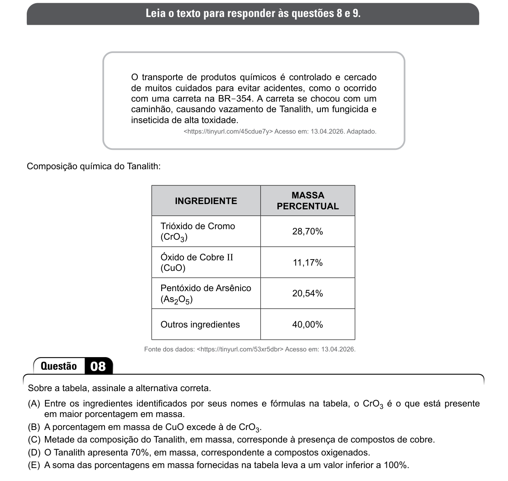
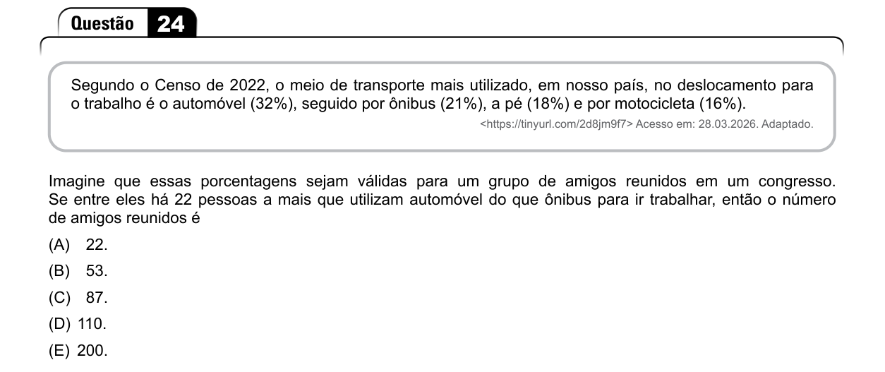
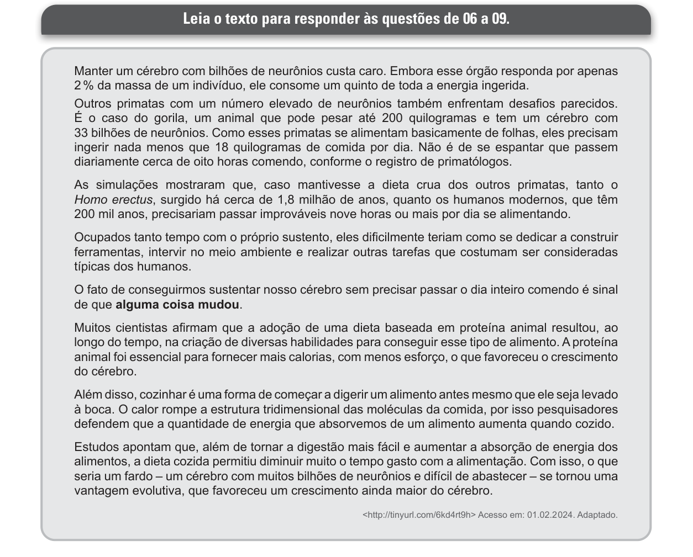
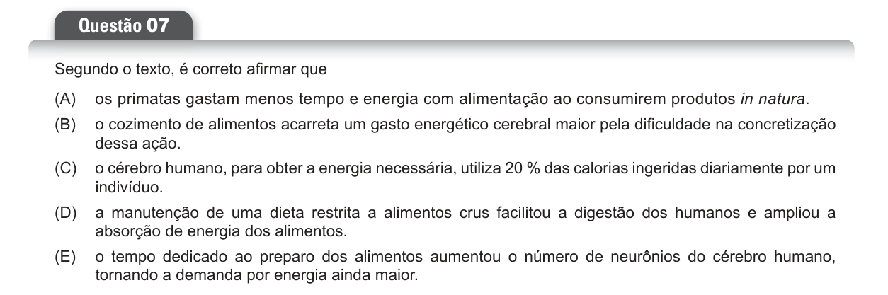
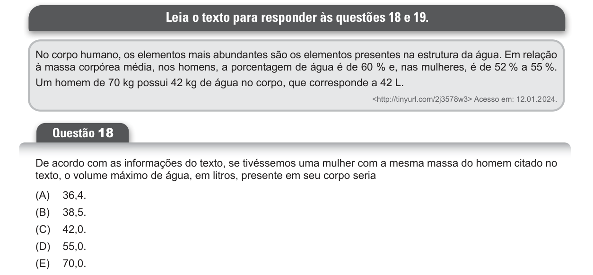

Abrir todos os gabaritos Ocultar gabaritos Recomeçar Imprimir
Os enunciados aparecem em recortes dos materiais fornecidos. Clique na imagem para ampliar. As respostas foram calculadas para este material; não são transcrições de gabaritos oficiais.
ETEC · 2º semestre de 2026 · questão 08

Selecione a letra correspondente às alternativas da imagem. Clique no enunciado para ampliar.
A B C D E
Conferir alternativa
🔽 Ver gabarito comentado Resposta: A Compare apenas ingredientes nomeados: CrO₃ = 28,70%, CuO = 11,17%, As₂O₅ = 20,54%.
28,70 é o maior.
A soma dos quatro valores é 100,41% (inconsistência da tabela original, mas não altera a alternativa A).
ETEC · 2º semestre de 2026 · questão 24

Selecione a letra correspondente às alternativas da imagem. Clique no enunciado para ampliar.
A B C D E
Conferir alternativa
🔽 Ver gabarito comentado Resposta: E Diferença = 32% − 21% = 11 pontos percentuais.
11% do total corresponde a 22 pessoas.
0,11T = 22.
T = 22 ÷ 0,11 = 200.
ETEC · 2º semestre de 2024 · questão 07


Selecione a letra correspondente às alternativas da imagem. Clique no enunciado para ampliar.
A B C D E
Conferir alternativa
🔽 Ver gabarito comentado Resposta: C O texto afirma que o cérebro consome um quinto da energia.
1/5 = 0,2.
0,2 × 100 = 20%.
ETEC · 2º semestre de 2024 · questão 18

Selecione a letra correspondente às alternativas da imagem. Clique no enunciado para ampliar.
A B C D E
Conferir alternativa
🔽 Ver gabarito comentado Resposta: B Maior percentual para mulher no texto = 55%.
55% de 70 kg = 0,55 × 70 = 38,5 kg.
Pela equivalência fornecida de 1 kg de água para 1 L: 38,5 L.